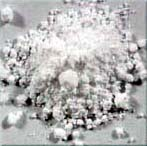

| |
| Articles |
 |
|
|
|
Titanium Dioxide
Article courtesy of Edouard Bastarache
- Source:
-
- Titanium is one of the most common components of the earth's
crust, ninth in abundance. It occurs naturally as ilmenite (iron
titanate) and rutile (titanium dioxide).
- Titanium forms four distinct oxides: titanium monoxide (TiO),
dititanium trioxide (Ti2O3), titanium dioxide (TiO2) and titanium
trioxide (TiO3).
-
- Occupational and Environmental Exposure Sources:
-
- Titanium is frequently used as a white pigment for a wide range
of paints, paper, inks, plastics, and the like. Exposure results
from breathing titanium dioxide dust. Possible exposure to intermediate
products in titanium dioxide production may also occur. Exposure
may then occur at any stage in the mining of ores, in the preparation
of titanium dioxide, and in any of the industries in which the
powder is stored and used.
-
- Clinical Toxicology:
-
- I- Routes of exposure:
-
- Titanium dioxide inhalation is the most common route of exposure.
Ingestion is certainly possible when some dust accumulates on
mucosal surfaces of the oropharynx and nasopharynx.
-
- II-Distribution, Metabolism and Elimination:
-
- Titanium dioxide is found in the lymphatics and regional nodes
that drain the lungs, indicating a slow removal by this process.
No data are available regarding oral absorption of titanium. Titanium
is excreted by the kidneys.
-
- III-Signs, Symptoms and Syndromes:
-
- A-Acute Toxicity:
-
- Titanium dioxide is an irritant to the upper airway, as are
other nuisance dusts. No evidence indicates that it induces an
acute inflammatory reaction at commonly seen exposure concentrations.
In workers with preexisting chronic obstructive airway disease,
titanium dioxide may exacerbate symptoms.
-
- B-Chronic Toxicity:
-
- Titanium dioxide is retained in the lungs. Particles of this
dust are found also in the regional nodes draining the lungs,
suggesting that these particles are slowly cleared by the lymphatics.
Little evidence indicates that titanium dioxide promotes a chronic
inflammatory reaction in the lungs. Titanium dioxide dust currently
is considered to be merely a nuisance dust that results only in
upper airway irritation.
-
- IV-Genetic Effects:
-
- No data are available regarding human genetic effects, and very
limited epidemiologic data about carcinogenicity are available.
Recent animal data support the conclusion that titanium dioxide
is a nuisance dust and does not produce any inceased incidence
of cancer rates.
-
- V-Management of Toxicity or Exposure:
-
- Titanium dioxide is an irritant dust, therefore, management
of exposure is supportive. Exposed workers should be removed from
the environment, and supportive pulmonary care should be provided.
-
- A-Medical and Biological Monitoring:
-
- Most laboratory tests are not helpful. Assessement of serum
and urinary titanium levels help to identify recent exposure.
-
- B-Occupational and Environmental Regulations:
-
- Acute upper airway irritation may be reduced by keeping exposure
to titanium at low limits.
-
- Quebec's exposure limit:
- VEMP (Valeur d'Exposition Moyenne Pondéré)
= 10 mg/m3 as total dust.
-
-
- C-Exposure Controls:
-
- Good industrial hygiene and monitoring of the environment should
limit employee exposure to titanium dust. If employees must work
in an environment with high titanium dioxide dust levels and poor
ventilation,respirators should be used.
-
-
-
- Edouard Bastarache M.D. (Occupational & Environmental
Medicine)
- Author of " Substitutions for raw ceramic materials "
- Sorel-Tracy
- Quebec
- Canada
- edouardb@sorel-tracy.qc.ca
- http://www.sorel-tracy.qc.ca/~edouardb/
-
-
-
- References:
-
- 1-Occupational Medicine,Carl Zenz, last edition.
- 2-Clinical Environmental Health and Toxic Exposures, Sullivan
& Krieger; last edition.
- 3-Sax's Dangerous Properties of Industrial Materials, Lewis
C., last edition.
- 4-Toxicologie Industrielle et Intoxications Professionnelles,
Lauwerys R.R. last edition.
- 5-Chemical Hazards of the Workplace, Proctor & Hughes,
4th edition
More Articles
|
|
|